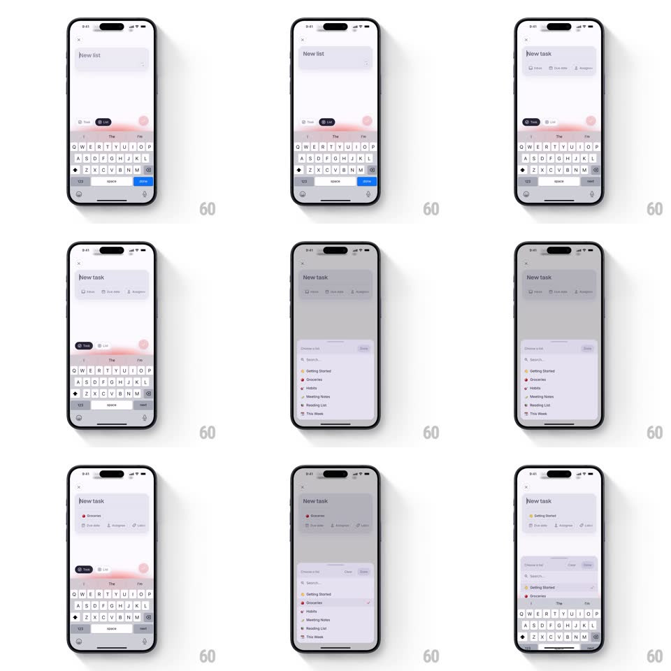

Media
Frame-by-frame

Rebuild this interaction 1:1: Superlist's composer switch - flip between Task and List inside the bottom-sheet composer and the whole form morphs: title, fields, and category pill reconfigure without closing the sheet.

Rebuild this interaction 1:1: Superlist's composer switch - flip between Task and List inside the bottom-sheet composer and the whole form morphs: title, fields, and category pill reconfigure without closing the sheet.
## Integration
Integration: stack-agnostic spec - springs given as stiffness/damping, timed motions as duration + curve; map every value to your framework and animation library of choice.
## Scene
A bottom-sheet composer over a dimmed list view, keyboard up. "New task" title, a text field, attribute rows, and a small segmented pill (Task | List) with a category pill beside it. In list mode the title reads "New list", an emoji/icon row appears, and the category pill swaps its label and glyph. A later step shows a "Choose a list" picker with colored-dot list rows.
## Motion spec
Pattern: in-place mode morph.
- Tap the toggle: the pill's thumb slides to the new segment (spring ~420/26, 200ms) with a haptic tick.
- The title crossfades character-smooth ("New task" to "New list", 200ms) - no slide, just a soft dissolve.
- Fields reconfigure with a vertical reflow: task-only rows collapse (height to 0 + fade, 200ms) while list-only rows (icon picker, list color) expand in (height + fade + translateY 6px, 250ms, staggered 40ms).
- The category pill morphs: its glyph crossfades and its label slides (old text out left, new in from right, 180ms), the pill resizing to fit (width spring ~380/24).
- The text field's existing text carries across the switch untouched; focus and keyboard never drop.
- The "Choose a list" picker slides up as a second sheet layer (spring ~360/28), its rows staggering in (translateY 10px, 200ms, 40ms apart).
## Calibration
- The switch never rebuilds the sheet: same container, same keyboard, same draft - only the form's shape changes.
- Keep both modes' first field identical in position so the caret never jumps.
## Reduced motion
Fields swap without height animation; title crossfades.
## Don't miss
- The toggle is tiny and lives in the form, not the nav - it's a property of the draft, not a navigation event.
- List rows in the picker carry colored dots; the dots are the only color in an otherwise monochrome sheet.